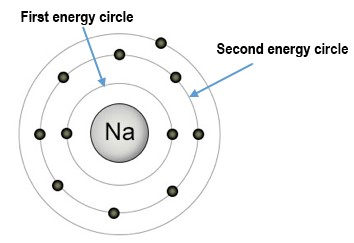

To understand why some elements bond with other elements — and why some do not — it is important to understand how electrons are organized in different elements.
In atoms, electrons move around in specific paths or "orbitals". These orbitals can be very, very complex and weird-looking (click here to see what some orbitals look like). In drawings of atoms in these units (and generally on the internet), electrons are often shown along circles (around the atom's nucleus), like the picture below. These circles are *not* the pathways of the electrons (or how and where the electrons move!). Instead, they represent how much energy the electrons have.
The circle that each electron is associated with represents the (small range of) energies of the electron(s) for that energy circle. Electrons associated with a given energy circle are at about the same energy level, regardless of the atom. This means that the two electrons along the innermost energy circle in the Carbon atom (above, left) and the two electrons along the innermost energy circle in the Oxygen atom (above, right) all have the same energy level (we'll call this E1).
In addition, the 4 electrons of the second (and outer) energy circle of the Carbon atom and the 6 electrons of the second energy circle of the Oxygen atom all have about the same energy level (we'll call this E2).
As the distance from the nucleus increases, the amount of energy associated with a particular energy circle increases. So, the electrons in the outermost energy circle, E2, have more energy than the electrons of the innermost energy circle, E1.
First (lowest-energy) energy circle. This first Energy circle can have up to TWO electrons in it. This first Energy circle can't have any more than 2 electrons. If you look closely at the drawing of the (carbon) atom below (on the left) and the oxygen atom (below, right), you will notice that there are two electrons that are along the first Energy circle in both atoms.
All atoms "like" having two electrons at this energy circle (E1). So, except for hydrogen (which only has one electron), all atoms have two electrons in the first energy circle. There cannot be any more than two electrons in this first Energy circle.
Helium. The element helium (He) has two electrons (see Periodic Table). So, its first Energy circle is complete. This makes Helium a stable element, meaning it does not easily react or bond with other elements. It tends to stay on its own.
Hydrogen. On the other hand, hydrogen (H) only has one electron. So, hydrogen's first Energy circle is not complete: it "wants" another electron to complete the Energy circle. So, unlike helium, hydrogen readily reacts and bonds with other elements (like with oxygen, to make water, H2O). This is why—even though it is the lightest and most buoyant element—people stopped using hydrogen in blimps and balloons. Hydrogen's high reactivity makes it too dangerous (look up the "Hindenburg disaster" if you are not familiar with it). People now use the (much) safer helium in blimps, balloons, etc.
Second energy circle. The second Energy circle (E2) can have up to EIGHT electrons in it. In E2, all types of atoms or elements "like" to have 8 electrons. For example, in the sodium (Na) atom below, there are 8 electrons at this energy circle. (As with all different types of atoms, or elements, there are still only 2 electrons in the first energy circle!)
Neon. The element neon (Ne) has full first and second Energy circles (E1 and E2). Since the first Energy circle is full with 2 electrons, and the second Energy circle is full with 8 electrons, Ne has 10 electrons (you can double-check this on the Periodic Table ). This makes Ne less reactive than other elements with Energy circles that are not "full."
Noble gases. You may have noticed that He and Ne (both stable elements with full Energy circles) are on the far right side of the Periodic Table. All of the elements on the far right-hand side of the table (He, Ne, Ar, Kr, Xe, and Rn) are called "Noble gases." Noble gases are stable elements, and do not easily react or bond with other elements.
Electrons will fill up lower Energy circles first before higher Energy circles. A very important fact is that electrons will "fill" energy circles that are closer to the nucleus before filling energy circles that are farther from the nucleus. This is why if we start at the beginning of the Periodic Table, with hydrogen and move to the right (to helium, then lithium), we see that the electrons fill E1 first before they start to be in E2 (starting with lithium).
Electrons will fill the lowest available Energy circle because they "like" to have the lowest amount of energy possible.
Why do electrons fill up lower Energy circles first? We know that (negatively charged) electrons and (positively charged) protons are attracted to each other because of the electric force. This happens in atoms, where this force will pull electrons to the lowest Energy circle (closest to the nucleus) that is available for the electron to fit into.
First Energy circle (E1): There can be up to 2 electrons in E1. When there are 2 electrons in E1, this energy circle is full. There can be no more electrons at E1.
Second Energy circle (E2): There can be up to 8 electrons in E2. When there are 8 electrons in E2, this energy circle is full. There can be no more electrons at E2.
After the second Energy circle, things get more complicated. (If you dare, Click here to see what happens after the second Energy circle...)
Why do we care about Energy circles? We care because they help us to predict which elements will bond with which other elements. The basic idea is that elements like to have "full" Energy circles and also do not like incomplete (non-full) Energy circles.
This is why Na and Cl bond to form NaCl, common table salt. This is why H and O bond to form H2O (two hydrogen and one oxygen atom), or water.


***Note for Teachers: You can access more information about this website and find other resources for science inquiry on the ISP Tutor website.
©2021 Klahr Lab, Carnegie Mellon University. All Rights Reserved
Carnegie Mellon University | Dept. of Psychology | 5000 Forbes Ave. | Pittsburgh, PA 15213 The TED project was funded in part by the Institute of Education Science (IES), Grant R305H060034, and in part by the National Science Foundation, Grant SBE035442. The ISP Tutor project is funded by IES, Grant R305A170176.
The research reported here was supported by the Institute of Education Sciences, U.S. Department of Education, through Grant R305A170176 to Carnegie Mellon University. The opinions expressed are those of the authors and do not represent views of the Institute or the U.S. Department of Education.